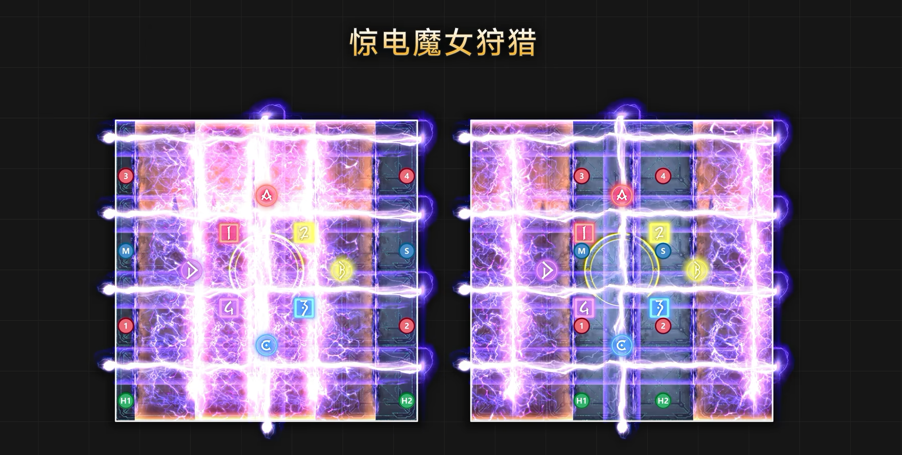
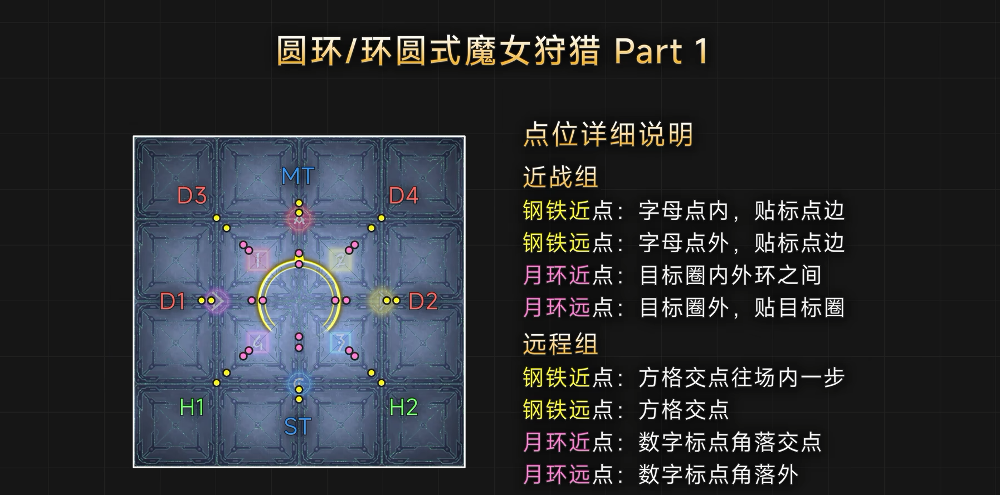
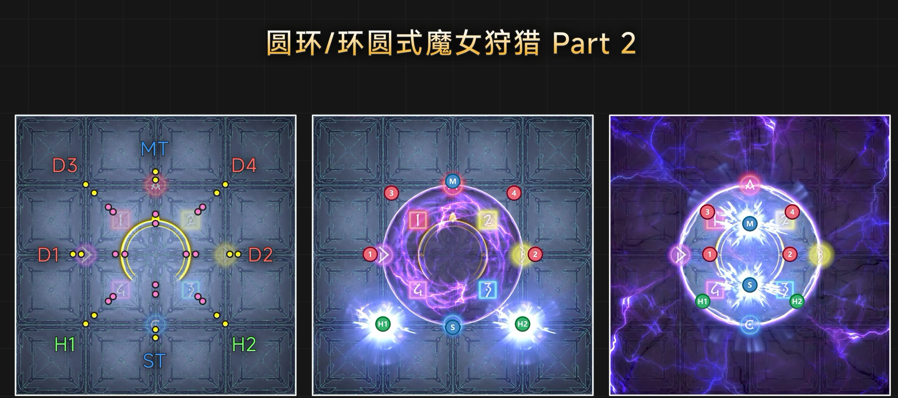
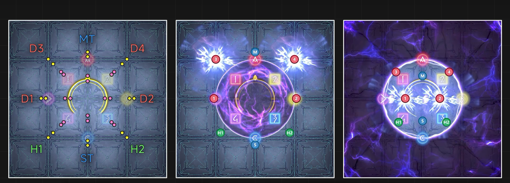
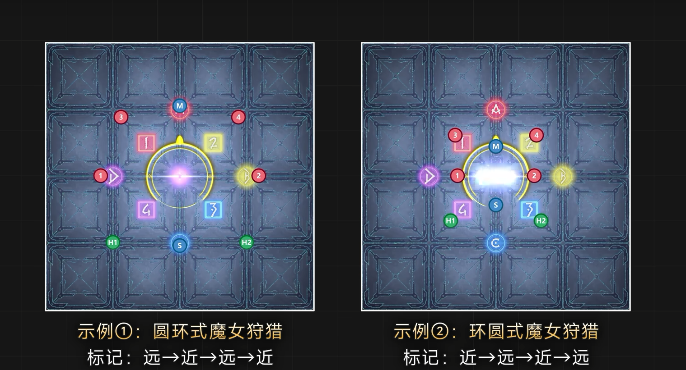
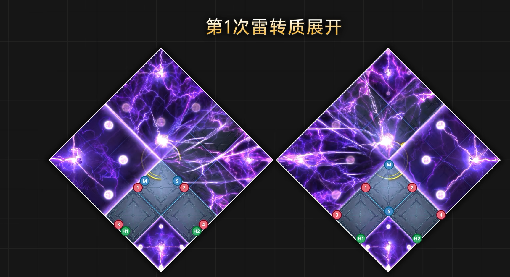
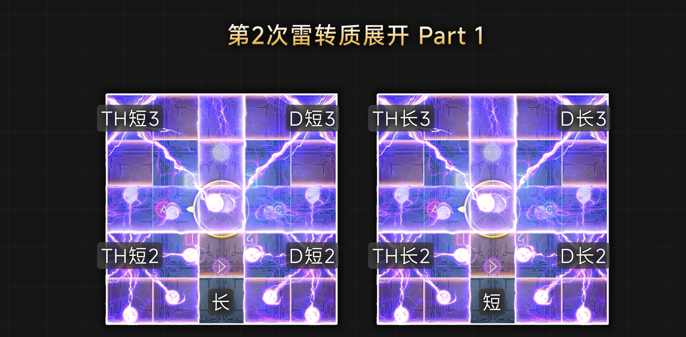
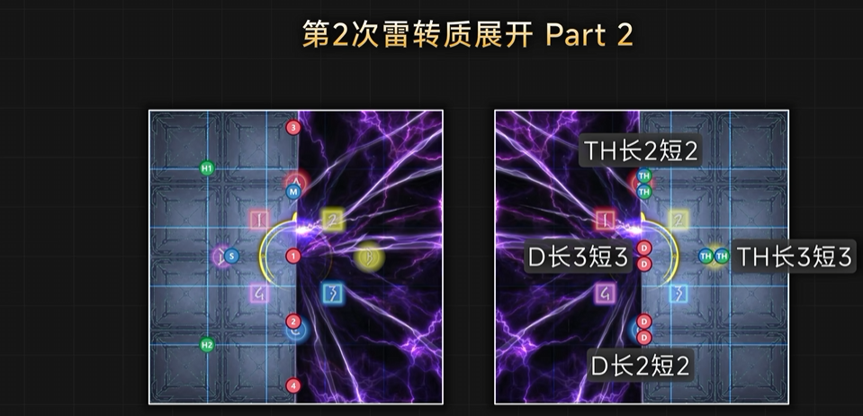
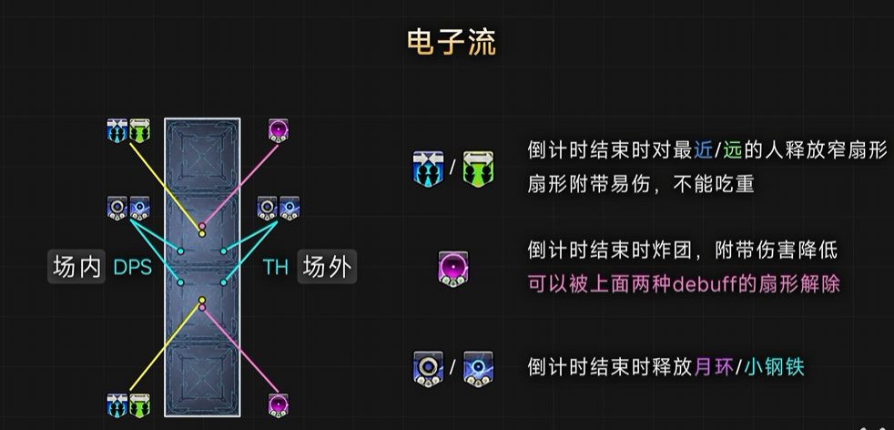

【阿卡迪亞零式】輕量級四層前半 狡雷
關卡簡稱：M4S | Boss：狡雷 BGM Give It All 〜至天の座アルカディア：ライトヘビー級〜
宙斯之怒
傷害非常高的全體魔法攻擊。務必使用足夠的減傷和護盾。而且由於宙斯之怒第一次和第二次攻擊之間大約間隔80秒，建議儘早使用冷卻時間90秒的減傷技能，以確保在兩次攻擊中都能夠使用這些減傷。
魔女回翔
BOSS會瞬移到場地北面並讀條該技能，同時西側會出現雷轉質和BOSS同時發動直線攻擊。請留意BOSS翅膀的雷射位置 and 雷轉質位置以進行迴避。
驚電魔女狩獵 → 魔女狩獵
該機制需要在躲避地板預兆範圍攻擊的同時引導BOSS的攻擊。
在機制後半，如果首領頭頂的菱形圖示是紫色且相隔較遠，則是會點距離BOSS最遠的四名玩家小鋼鐵。
如果是粉紅色且相隔較近，則是點距離BOSS最近的四名玩家小鋼鐵。
(請注意此輪引導的人一定是要前面沒有被BOSS攻擊的人，否則一定會必死。)

圓環式魔女狩獵 or 環圓式魔女狩獵
該機制需要在迴避BOSS鋼鐵和月環的同時引導BOSS每下對兩人的遠引導點名或近引導點名。在圓環式中，BOSS攻擊順序為「鋼鐵→月環→鋼鐵→月環」，而在環圓式則是「月環→鋼鐵→月環→鋼鐵」。而引導BOSS遠近攻擊也總共會出現四次，近和遠各兩次，因此每人都需要負責一次引導。




雷轉質展開1
BOSS會在場地四角部署各一顆雷轉質，其後BOSS會用二條雷射充能雷轉質，總共三輪。 場上必定有兩個雷轉質會被充能一次，其後釋放和其所在格子等大小的方形AOE。另外兩個雷轉質則必定會被充能二次，其後釋放和其所在1/4半場的大方形AOE。 之後BOSS會同時發動半場刀+四組分攤/八人分散+雷轉質方形AOE。 判別是四組分攤或八人分散需留意BOSS身上紫球數量。

雷轉質展開2
轉質展開2回目會給所有人附加一個名為「蓄雷裝置」的Debuff，該效果會在一段時間後（22秒和42秒）觸發範圍攻擊，蓄雷裝置的範圍會根據其受到的輝光電火花攻擊的數量而增加。之後，將會根據雷擊次數高/低，將隊伍分散到由電牢籠劃分出的不同安全區，並進行共兩次的處理。 此外，穿插在兩次處理之間的側方電火花，其所造成的半場範圍攻擊也會為蓄雷裝置充能，因此你需要判斷「八人分散」還是「四組分攤」並正確處理來取得正確充能次數。


奔雷砲+電子流
BOSS會給所有人施加三層離子簇Debuff（負極或正極），然後移動到北側。隨後BOSS會將炮口略微傾斜，並在對北側四分之三的方格進行五次範圍攻擊，被攻擊的區域將被摧毀。另外該範圍攻擊傷害極高，被擊中三次有可能會直接死，因此請務必盡快迴避到安全區。
此外，透過觀察BOSS目標圈的箭嘴，可以輕鬆判斷它傾斜的方向，所以近戰最好避免站在目標圈附近。
BOSS移動到安全區後，會向前和後發射黃白光束。玩家需要受到離子簇疊加的三層黃白Debuff相反顏色光束的攻擊，從而減少並最終清除身上所有的負極或正極Debuff。此外，由於受到光束攻擊會給所有人施加額外的Debuff，因此玩家需要根據自身得到的Debuff移動到預定位置，然後應對此機制。另外，由於光束會對每邊第一位的造成極高傷害，坦克請確保自身位於最前排來承受光束。

雷轉質移植
從BOSS為中心發動七次的八方向細扇形攻擊(第五次會點四人小鋼鐵、第六次會對被點小鋼鐵者直線攻擊)總共兩輪。請按照巨集兩人一組分散站位，避開扇形。
▼ 指向雷(小鋼鐵) + 驚電裂隙(直線攻擊)
當按照巨集兩人一組分散站位時，近戰和遠程職業應會成對出現，因此近戰請在前排，遠程在後排，以此站位來回避開扇形。如果近戰和遠程之間站太近，就可能會同時受到指向雷傷害，從而無法抵禦後面的直線攻擊，所以請盡量保持近戰和遠程之間有一定距離。
在第五次八方向攻擊之後，會隨機點4坦補或4DPS指向雷。之後，會對其發動驚電裂隙的直線攻擊，由於被指向雷擊中的人會受到易傷，所以如果他們作為前排被直線擊中，則會被直接一擊必殺。因此，同組沒有被指向雷擊中的人需要向前排移動替同組檔槍。
靈魂震盪+聚雷加農炮
BOSS體型會變得巨大，並使用範圍魔法攻擊“靈魂震盪”，隨後進行兩次範圍物理攻擊，最後使用範圍物理攻擊“聚雷加農炮”，該攻擊會摧毀當前場地，並將全員擊飛到另一個場地。
這一系列範圍攻擊傷害極高，因此請使用坦克的“雪仇”，BH的護盾，近戰職業的“牽制”。不過，BOSS在後半開頭時也需要大量的減傷資源，因此也需要避免在此階段使用過多的減傷技能。